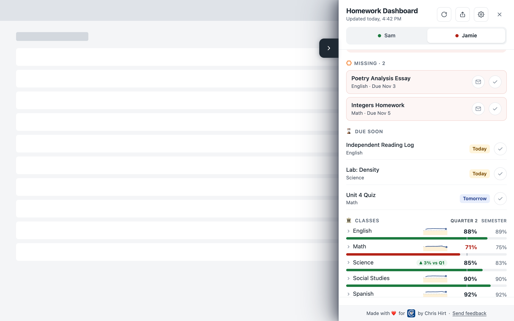

Missing work first, with turned-in and done marks
Teacher-marked Missing work is always at the top, with the class and due date. If work was handed in on paper, the family can tick it as turned in, and it moves to “Waiting on teacher” until it's graded.
What the research says
Specific information about missing assignments is what made the parent alerts work.[1] Feedback helps most when it's about the task and what to do next.[9]
What we avoid, and why
A plain zero is never called Missing, because only the teacher's Missing mark counts. Marks never notify anyone. Feedback that turns attention to the person (“you're behind”) instead of the task often makes things worse.[10]
